Resistance Is Futile
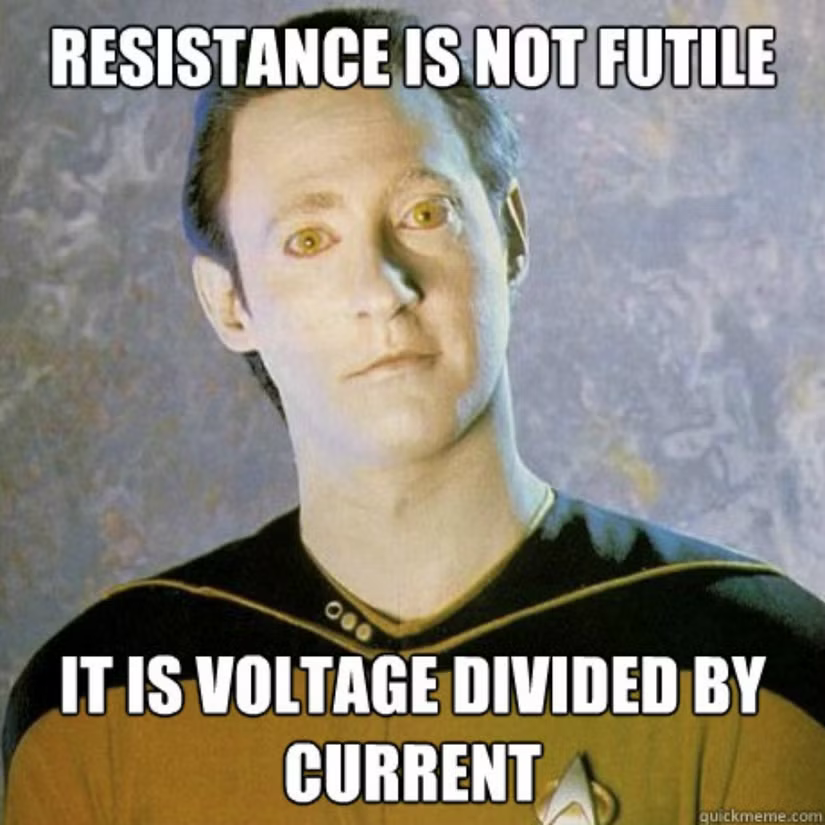
Welcome to the [BORG] Alliance! This page was created to help our team, both old and new players but primarily beginners. Start with the RoE tab above to learn what rules we follow on this server. Feel free to ask any questions in the AC (Alliance Chat) chat room which is found at the top, center of your screen.
We are a strong team and we try to help each other as much as possible. However, please keep in mind that at the end of the day, this is a game and IRL (In Real World) things come first. This means that your life outside of the game takes priority and we all understand this. So, don't feel pressured or forced to have to be on 24/7. If you can, that's awsome! But definately not required. Have fun and LLAP!
Chain of Command
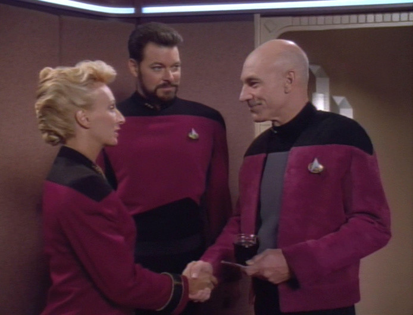
Admiral:
Commodores:
Premiers:
717/BORG Rules of Engagement (RoE)
Server-wide RoE Est. 09/19/2025. Amended 12/17/2025
1. Survey Ships: Always protected while UPC. Exceptions:
- No protection in a system where the same alliance is raiding a base.
- The survey ship is being used for attacking other ships or hostiles.
- The survey ship is zero node and no other nodes are available in the system. The attacker must immediately start mining the node just cleared.
2. Warships as Miners:
- Specialty warships are protected (e.g. Discovery, NSEA, Voyager) only when actively mining for their loop materials.
3. Token Space: Any system requiring you to spend something to enter.
- Protected from attacks on any ship type. Any system requiring a special token (e.g. Borg, Mirror) is protected.
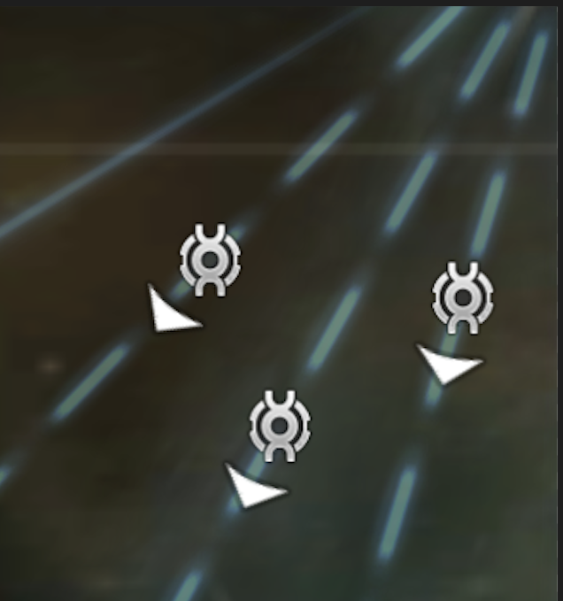
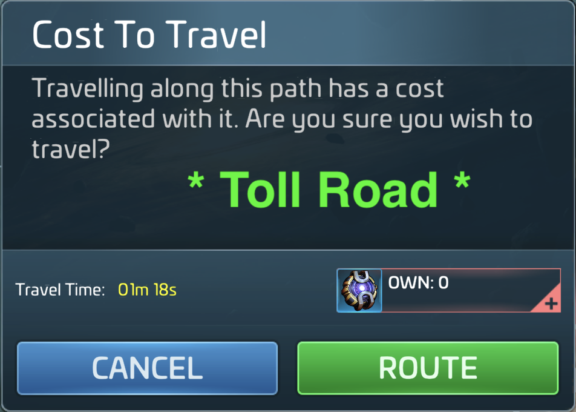
4. Armadas:
- Ships are protected when inside the armada circle except when using it as protection after initiating an attack on another player.
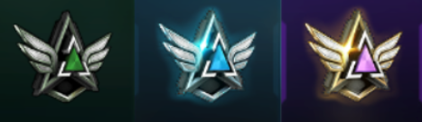
5. Alliance Owned Territory:
- Entering another alliance's territory provides no protection of any type. Enter at your own risk.
6. Territory Capture or Defense:
- RoE does not apply in contested territories.
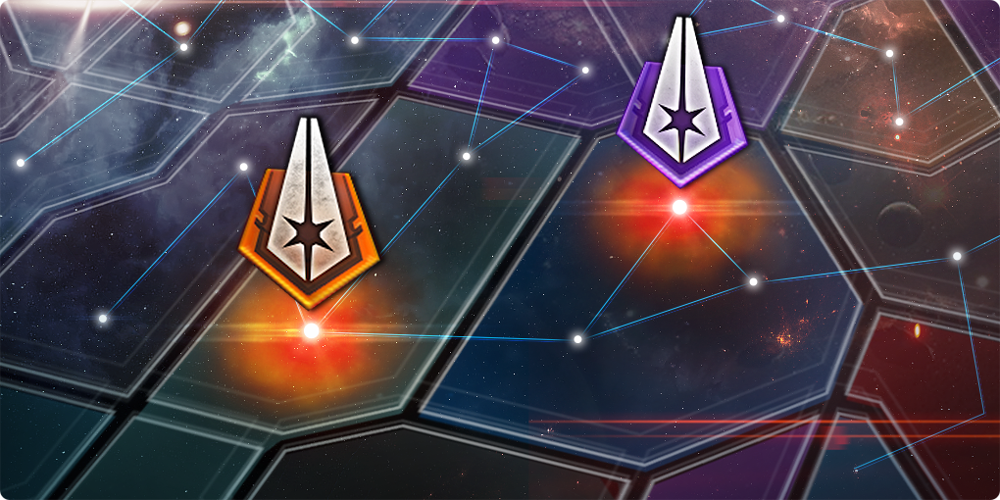
7. Warships:
- Do not have any protections except as defined in 2 - 4 above.
UPC = Under Protected Cargo
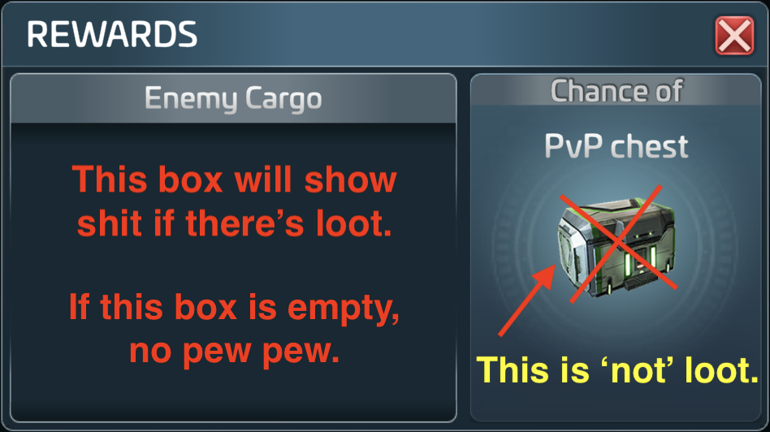
As long as this bar is gray, you are UPC
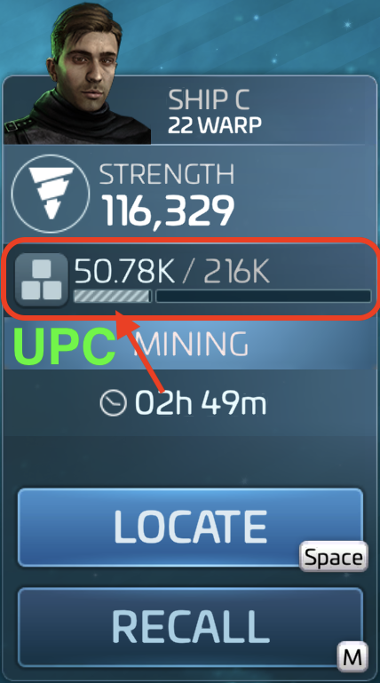
OPC = Over Protected Cargo
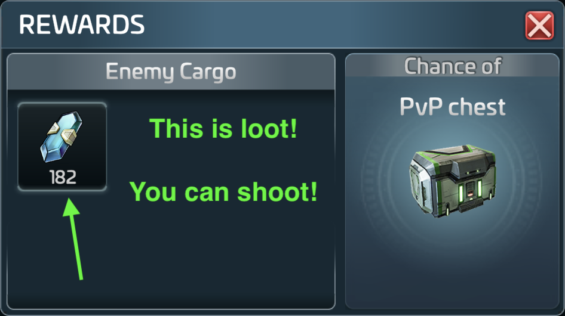
When the bar turns green, you are OPC
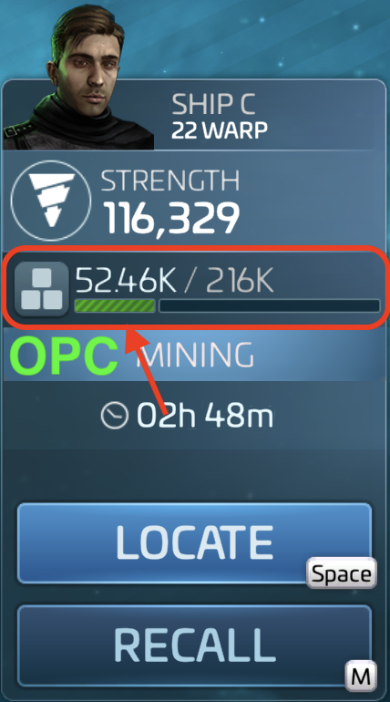
Rule of Thumb: If you are unsure whether to hit someone, stay within RoE.
Diplomacy
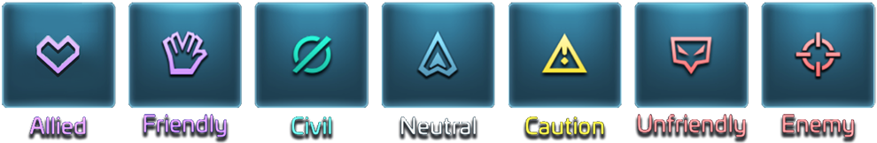
In the STFC realm, there is Diplomacy. What does that mean?:
- the skill of managing international relations
- the art of dealing with people in a sensitive and effective way
But what does this mean in the game? It means that we all have a general respect for the game and the players. This game does have a PvP (Player vs Player) aspect and depending on other players' actions, sometimes things can get a bit heated. This is why we have and follow RoE. Should there be an issue, it needs to be brought up to a Commodore or the Admiral of the alliance. To be sure you CYA (Cover Your Ass), always try to take screenshots before you take someone out. This greatly helps your Admiral and Commodores should another player (regardless of their title) come crying.
Do accidents happen? Yes. Will the game glitch and actually cause you to hit someone even though you did not intend to hit them? Also yes. Should this happen, just send that player a DM explaining what happened and apologize (and take a screenshot of said message including any replies). That's really all you can do. On the very outside chance things get very heated and become personal, don't go all postal on them. Take screenshots and reach out to your Commodores or Admiral.
Rule of Thumb: If you are unsure whether to hit someone, stay within RoE until you get clarification.
OPC? UPC? ABC? 123? Huh?!
You will see and hear all kinds of terms and acronyms. Below are some of the most common ones. Hover over (or tap) any term to see its definition.
Warships
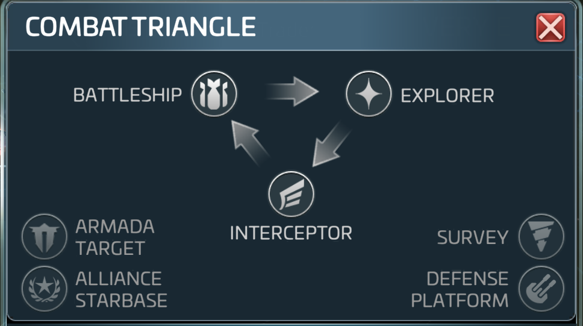
Warships Hierarchy
The battle triangle shows you which ships are best for fighting which ships. Is this written in stone? No. Virtually any ship that is strong enough and has a good enough crew can take on just about any other ship. Just about. Not all.
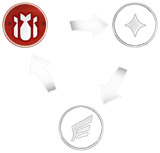
Battleships
These majestic ships come with immense firepower forming the backbone of every noble fleet. Only Interceptors manage to effectively penetrate their thick hulls.
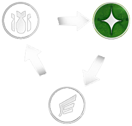
Explorers
The pathfinders of the galaxy with the strongest Warp Engines, Explorers should not be underestimated in combat either. Agile weapon tracking systems and high energy shields are only outmatched by Battleships.
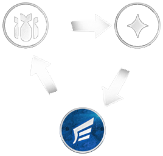
Interceptors
Lightning fast fighter vessels steered by only the most skilled pilots. Equipped with high impact weapons and effective impulse engines, Interceptors only have to watch out for Explorers.
Game Icons
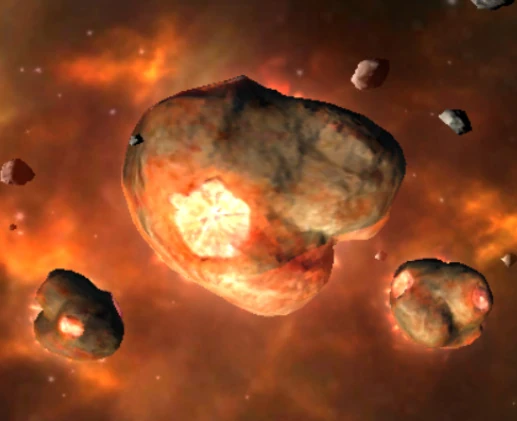
Parsteel
Parsteel is used for many things in the game:
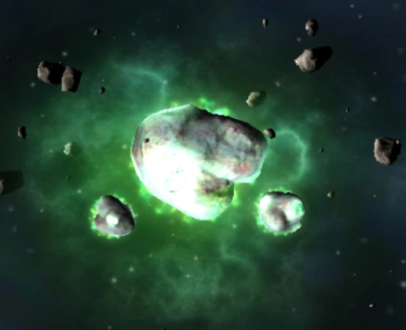
Tritanium
Tritanium is also used for many things in the game:
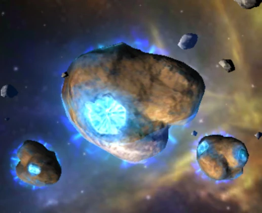
Dilithium
Dilithium is also used for many things in the game:
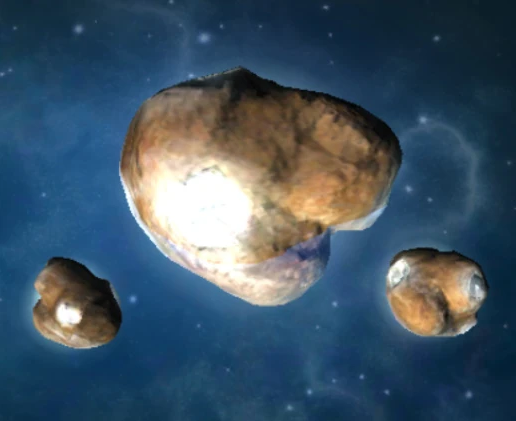
Raw Crystal
Raw Crystal is used in the Refinery to produce other forms of Crystal: Common, Uncommon, Rare, and Epic.
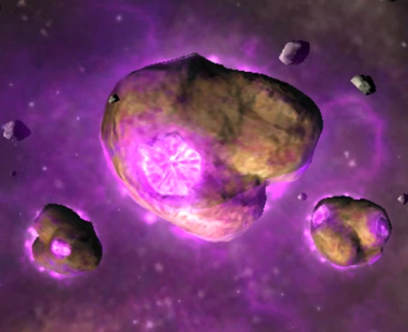
Raw Gas
Raw Gas is also used in the Refinery to produce other forms of Gas: Common, Uncommon, Rare, and Epic.
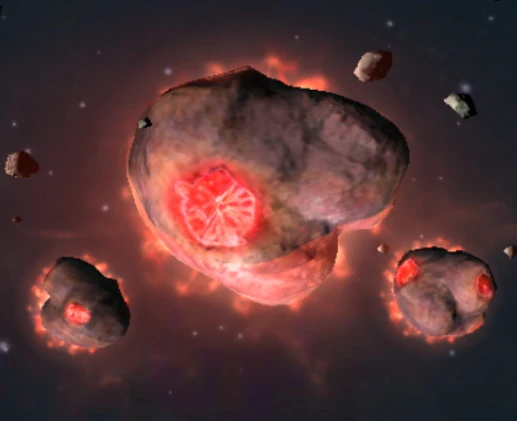
Raw Ore
Raw Ore is also used in the Refinery to produce other forms of Ore: Common, Uncommon, Rare, and Epic.
Corrupted
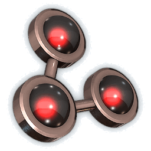
Decoded
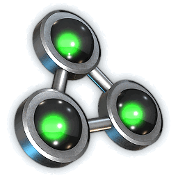
Corrupted/Decoded Data
The Botany Bay is the Augment Space Mining/Survey Ship best for mining Corrupted and Encoded Data. You are then able to convert this Data Resource to Augment Credits for items in the Augment Faction Store:
- Augment Reputation: points used to increase your Augment Faction Rep
- Augment Officer Shards: used to level up Augment Officers
- Recruitment Packs: these contain all kinds of Augment goodies
- Common Plutonium: available after lvl 20
- Uncommon Plutonium: available after lvl 24
- Rare Plutonium: available after lvl 30, which is needed to upgrade the Botany Bay
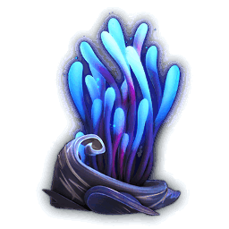
Mycelium Spores
Mycelium Spores are a key resource for the USS
Discovery's unique
Spore Drive, allowing it to perform
instantaneous "Black Alert" jumps
across the galaxy. Players mine and/or hunt for these fungal spores, process them in the
Discovery's Refinery
into Cultivated Mycelium, and use them to
power the ship's special warp ability and to
upgrade the vessel, tying into the lore from Star Trek: Discovery.
Essentially, Mycelium Spores are the fuel and currency for the USS Discovery's unique
gameplay mechanics, bridging the in-game resource system with the show's core sci-fi
concept.
Mycelium Spores can be mined from the following systems (sorted by Warp):
- Babishta (23) - Warp: 17
- Amagi (23) - Warp: 20
- Arcadion (23) - Warp: 20
- Esteria (23) - Warp: 20
- Izanami (23) - Warp: 20
- Jizo (23) - Warp: 20
- Netron Alpha (23) - Warp: 20
- Netron Omega (23) - Warp: 20
- Salara (23) - Warp: 20
- Tenzen-1029 (23) - Warp: 20
- Cada-X (28) - Warp: 25
- Dis (28) - Warp: 25
- Nalomas (28) - Warp: 25
- Risette (28) - Warp: 25
- Sae (28) - Warp: 25
Raw Latty
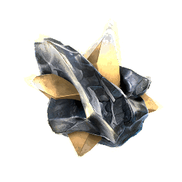
Concentrated Latty
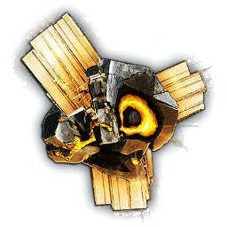
Latinum
Raw Latinum is mined and refined into Concentrated Latinum, which is then used for late-game progression, primarily to acquire Forbidden Tech (like Ferengi Whip components) and related upgrade materials, unlocking powerful ship modules, and as a key resource for the advanced D'Vor mining ship's progression and tasks within the Ferengi Faction, often alongside other rare resources.
Raw Latty
- basic resource found in specific systems, particularly in the Neutral Zone, Faction Zones, and Borg Space
- mined using ships like the D'Vor (Ferengi) in Latinum nodes
- used in the refinery
Concentrated Latty
- refined from Raw Latinum in your base's refinery
- crafting fragments and upgrading Forbidden Tech modules, a major endgame goal
- essential for tasks related to the Ferengi D'Vor mining ship's progression
- used to create catalysts for specific ship components (like S31 Torpedo Pods)
- can be converted into various shards and materials needed for high-level progression
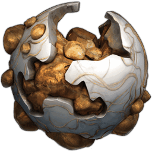
Isogen
Isogen is crucial for Alliance Territory Capture, used to mine and refine into key components like Progenitor Alloy and Iso-Emulsion, and ultimately to join takeovers and activate services in the Origin Sector, with higher tiers unlocking in captured zones. It's a primary resource for Alliance progression, differentiating alliances in controlling territory and accessing advanced features.
Trellium-A
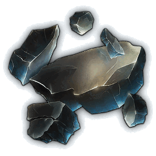
Trellium-D
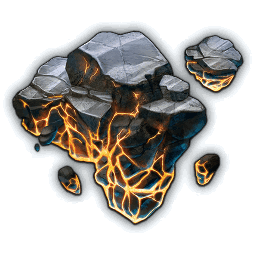
Trellium A & D
Trellium-A and Trellium-D are valuable minerals from the Mirror Universe, mined from systems or dropped by hostiles; they're refined into Liquid Trellium-D, essential for upgrading Mirror Universe Officers (like Mirror Picard, Data) and purchasing unique items like Mirror Dust, Rift Keys, and Holodeck materials in the Mirror Universe Store. Trellium-D is especially important for ship upgrades, while raw Trellium-A and Trellium-D are refined into liquid forms for these specific uses.
- Officer Upgrades: Liquid Trellium-D is crucial for leveling up your Mirror Universe Officers
- Store Purchases: Used to buy special items in the Mirror Universe Store, including Mirror Dust (for research), Rift Keys (to access deeper Mirror Universe areas), NX-01 Officer shards & Holodeck materials
- Ship Components: Related forms like Omega Trellium are used to upgrade ships like the NSEA Protector
Σ-Dilithium
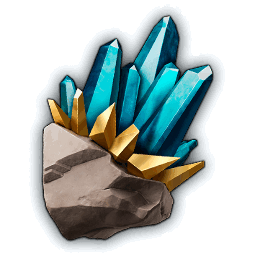
Σ-Parsteel
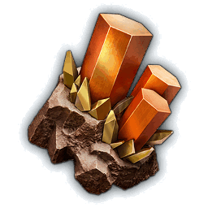
Σ-Tritanium
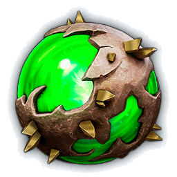
Σ-Dilithium
Sigma Dilithium (Σ-Dilithium) is a high-grade, end-game resource (Grade 6) used primarily for upgrading powerful ships, buildings, and research, especially as players progress to higher levels (61+) and need to refine raw materials or raid higher-level hostiles for these advanced materials. It's crucial for advanced progression, acting as a bottleneck resource, much like regular Dilithium is for early game, but for top-tier content.
Σ-Parsteel
Sigma Parsteel (Σ-Parsteel) is a crucial G6 resource needed for high-level activities, primarily upgrading ships, stations, equipment, and acquired through G6 generators, raiding, or refining it from raw resources using specialiazed G6 refineries, and requiring G6 survey ships to mine it.
Σ-Tritanium
Sigma Tritanium (Σ-Tritanium) is a high-level, G6 resource essential for advanced ship upgrades, crafting, and technology, replacing standard Tritanium as players progress into G6 content, obtainable through G6 generators, refining raw Sigma resources, and raiding high-level systems. It's a crucial material for leveling up G6 ships, unlocking new faction tech, and completing endgame activities, often refined from standard materials or obtained via specific artifacts like Pike's Sextant.
Alliance Tournaments!
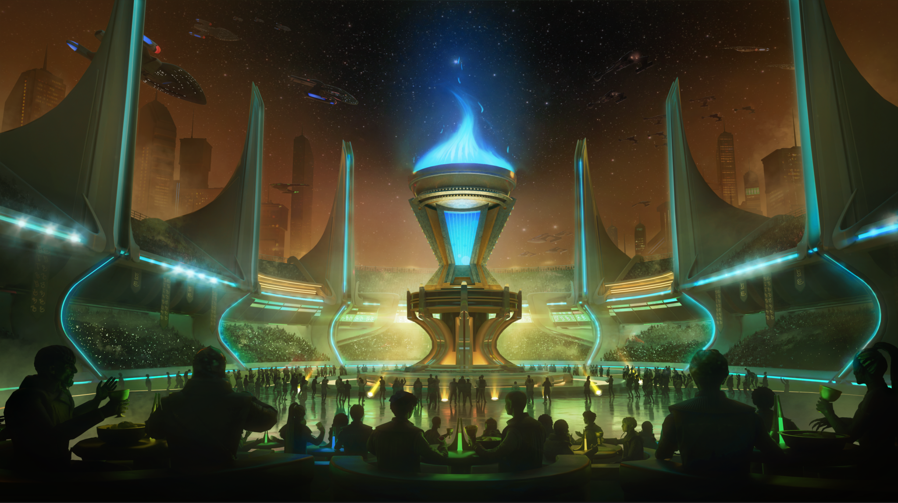
The Tournament consists of completing tasks and the point reward goes to the alliance's total to score vs other alliances from many servers. The top 35% of alliances are promoted to next league. The bottom 35% are relegated to previous league. The alliance store will remain open for 2 days after the end of the tournament.
Tasks:
- complete a maximum of 3 per day. Any unfinished tasks at the end of tournament day are failed and your max is reset to 0/3
- you can only have 1 active task at a time. Taking a task, not finishing, and taking another will fail the first task.
- the task pool is common to entire alliance; refreshing or taking a task prevents others from taking it.
- the armada tasks come in multiple versions:
--Defeat FKR armada means you simply have to participate in the victory over a FKR faction armada
--Spend FKR armada means you must be the one to spend the directives on that armada. Victory not required. - some tasks require spending $$ to complete. Obviously do not take if you do not want to spend.
Tips & Tricks
How To Stop a Tail
Increase/Decrease FKR Rep
* Faction Survey ships
give a "higher" negative hit to your reputation within that Faction than other ship
types. If you have
to engage Faction ships where you have a good rep or are trying to build a good rep,
avoid targeting
that Faction's Survey ships. Conversely, if you want to decrease your rep with a
Faction faster, target
their Survey ships.
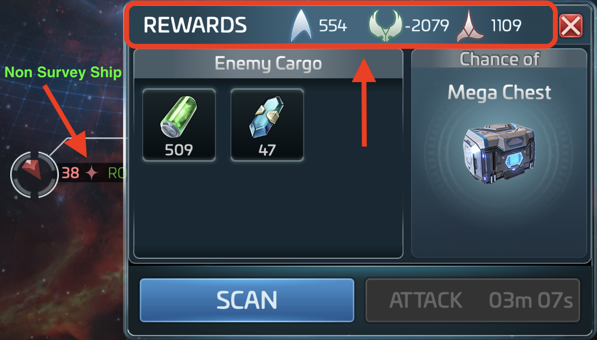
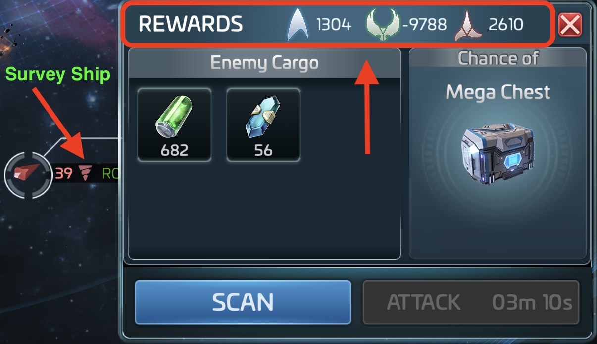
Operations Levels Milestones
Rule of thumb: Level ALL Buildings, Weapons Platforms, Drydocks & Research
before raising Ops to the next level.
The game kind of pushes you, hard, to level up Ops quickly but it is not benefical,
at all. In fact, it can actually hinder your progress.
- Ops Lvl 05: You are now open to PvP attacks while mining
- Ops Lvl 10: You are now open to PvP attacks on Warships and Surveys, from players as high as Ops Lvl 12
- Ops Lvl 12: This is your last chance to transfer to another server. The transfer token becomes inactive @ Ops Lvl 13
- Ops Lvl 13: You are stuck on whatever server you're
on.
- Ops Lvl 15: Your base can now be attacked. A 7 day peace shield activates when you reach this level. Use this time to max out your Weapons, Platforms & Drydocks. Peace shields drop when you attack another player. If you complete your Dailys, you will receive 24 hours worth of shields. After the initial shield drops, it is now your responsibility to stay shielded when not online. Shield or share!
- Ops Lvl 18: Franklin & Botany Bay ships become available
- Ops Lvl 19: Court of Q Trials Building becomes available
- Ops Lvl 20: 3* or G3 refinery opens
- Ops Lvl 23: Armada Control Center (ACC) research node opens, allowing access to construct the building. It takes 1000 tactical cores to complete the research. Once the ACC is built, you will be able to run Armadas!
- Ops Lvl 25: While able to mine Isogen as soon as you can reach an Iso system, at Ops Lvl 25, you can now refine raw Isogen into Refined Isogen and Iso-Emulsion. Also, you'll be able to trade in Cardassian loot which is obtained from Cardassian Armadas, or "CarMadas". The Starbase and Territory Research Trees also become available
- Ops Lvl 26: F/K/R ships unlock in the Faction Stores, dependent on your Faction Reputation
- Ops Lvl 28: Rogue Faction Store opens
- Ops Lvl 30: ACC 5-Seat Armadas, Sarcophagus Forge Buff, Voyager Refinery
- Ops Lvl 31: Amalgam becomes available
- Ops Lvl 35: Bajoran Faction & Defiant unlocked, Franklin-A available
- Ops Lvl 37: Titan unlocked
- Ops Lvl 38: Ex-Borg Faction unlocked, Cerritos unlocked
- Ops Lvl 39: 4* refining (Common), ACC 6-Seat Armadas, Ascension to Ops Lvl 40 available every Friday
- Ops Lvl 40: 4* refining (Uncommon)
- Ops Lvl 41: 4* refining (Rare)
Alliance Reputation Levels
In Star Trek Fleet Command (STFC), Alliance Reputation, or Rep, is a personal
measure of your standing within your current Alliance, distinct from
Faction Rep. It is primarily used to unlock specific Starbase
Research.
Key Mechanics of Alliance Rep:
- Resets on Leave: Unlike Faction Rep, your Alliance Rep resets to zero if you leave or are kicked from your Alliance, even if you rejoin the same one later.
- Earning Points: You earn Rep by destroying Cardassian stations, defeating Cardassian Armadas, or completing specific Alliance-based tasks and bounties.
- Starbase Research: Many late-game Starbase Research Nodes are gated behind specific Rep levels.
Alliance Rep Levels:
- Neutral: The starting level for any new alliance member
- Tolerated: The first positive progression level
- Neighbor: Achieved by gaining further reputation points
- Friendly: A standard positive tier
- Favored: Unlocks higher-tier rewards and research capabilities
- Consort: A mid-to-high standing level
- Associate: Often required for advanced Starbase upgrades
- Respected: A milestone that often acts as an initial "soft lock" for progress
- Celebrated: Continued progression for active members
- Admired: High-level standing for dedicated contributors
- Esteemed: One of the upper tiers of reputation
- Commended: Near-maximal standing before specialized elite tiers
- Glorified: The standard peak for many long-term players
Acquiring Stella
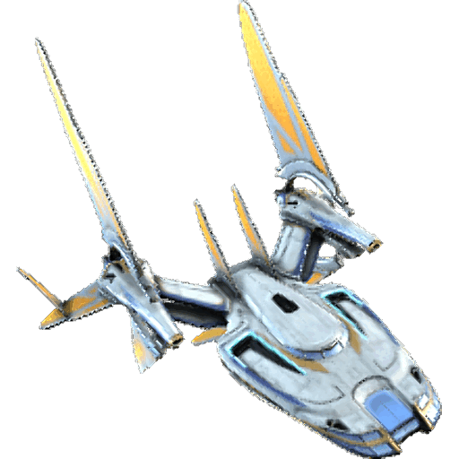
When working to get the Stella, keep the following in mind:
- Do not rush Rogue Rep. Avoid completing missions or tasks that push your Rogue Rep past Rank 1 (Lackey) to avoid losing access to getting the bps in the Rogue Faction store. Once you reach Rank 2 (Abettor) or higher, the option to purchase Stella bps with Rogue Credits disappears from the store.
- Credits: You need 1,000 Rogue Credits to purchase the full set of bps. (10 bps per 100 Creds * 10).
- Rep Increase: After you have your first Stella, you can increase your Rep freely.
Factions
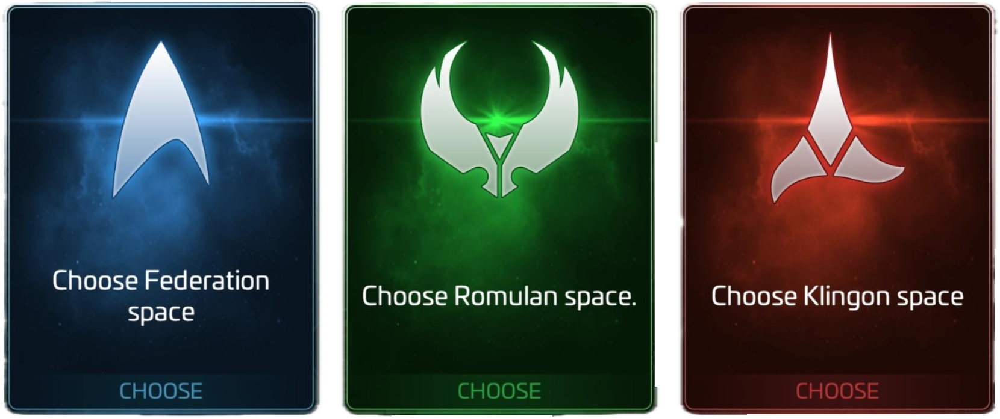
When you reach
Ops lvl 22, you gain access to the three, primary core Factions: Federation,
Klingon, and Romulan. At this point,
you can begin building Rep with each Faction through various activities. There are also
additional Factions including:
Augment, Outlaw, Bajoran,
Rogue, Ex-Borg, The Terran Empire,
and Section 31 or S31. These additional Factions operate
under different game mechanics.
Rep with each Faction is measured in points and determines your standing, which ranges
from Enemy to
Prestige tiers. The three main Factions
operate on a triangular relationship, meaning: gaining Rep with one Faction
typically reduces your standing with the others.
There are 35 Rep Tiers. Here are the key thresholds:
- -2,000000/-500,000: Lowest possible rep - Enemy
- 10,000,000/30,000,000: First rep lock - Respected
- 1,000,000,000/1,100,000,000: Second lock - Champion
- 15,000,000,000/15,000,000,500: Third lock - Legend
- 500,000,000,000/500,000,000,500: Fourth lock - Hero
- 450,000,000,000,000/450,000,000,000,000: Fifth lock - Prestige VI
So, how do you increase your Rep with a Faction? I'm glad you asked!
- Killing Hostile Ships: Destroying ships from opposing Factions grants Rep. Traders/Survey ships provide the highest Rep per kill
- Completing Missions: Faction-specific missions award significant Rep points. Archiving missions and completing them strategically can accelerate progress
- Daily Goals: Each Faction offers daily objectives that reward Rep
- Faction Reputation Events: Spending resources in Daily Events provides Rep without losing any with other Factions
- Armadas: Defeating Armadas is the only method to gain Rep without losing any with other Factions
- Away Team Missions: Completing "Lead Expedition" Away Team missions grants Rep points
- Borg Refinery: Provides additional Rep opportunities
Once you reach a Rep lock threshold, your standing cannot drop below that
threshold. This
allows you to shift focus to other
Factions without losing progress. The first lock at 10 million is particularly crucial,
as it enables dual faction or triple faction strategies.
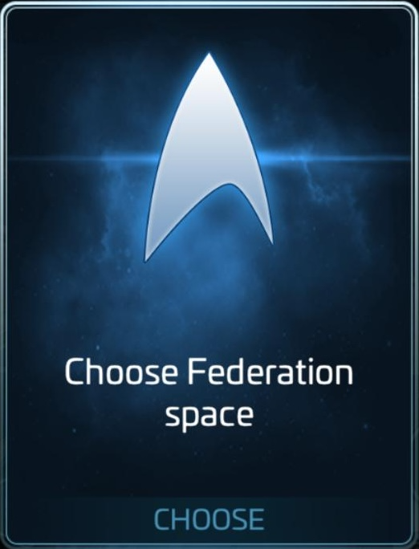
Federation Specific Details
- Philosophy: "Ad Astra Per Aspera" (Through Hardships to the Stars)
- Access: Available at Ops Level 22
- Kill: Klingon and Romulan hostiles for positive Federation Rep
- Complete: Federation missions and Daily Goals
- Participate: in Federation Events
Federation Special Rewards
- Ship Blueprints: Federation vessels including USS Intrepid and others
- Faction Store: Unlocks at 500 Rep Points (Tier 3)
- Protection: Entering Federation space with Rep below Tolerated spawns enemy hostiles
- Recruit Tokens: Federation Officer Recruitment Tokens
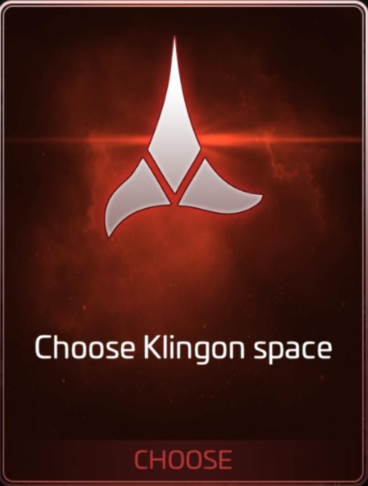
Klingon Specific Details
- Philosophy: Warrior culture focused on honor and combat
- Access: Available at Ops Level 22
- Destroy: Federation and Romulan ships
- Complete: Klingon Missions and Daily Objectives
- Participate: in Klingon-specific events
Klingon Special Rewards
- Ship Blueprints: Klingon vessels including B'rel and other warships
- Faction Store: Unlocks at 500 Rep points
- Materials: Primarily crystal-based refined materials
- Faction Credits: Used to purchase exclusive items
- Protection: Similar hostile spawn mechanics for low Rep
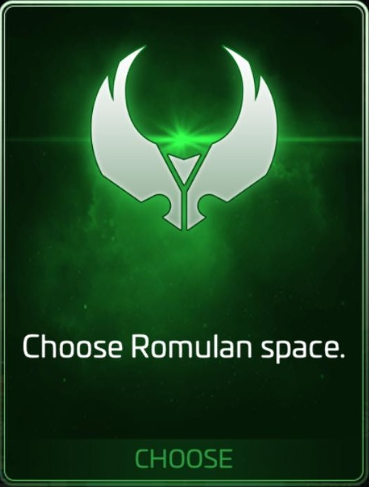
Romulan Specific Details
- Philosophy: "Jolan tru" - Subterfuge and Strategic Superiority
- Access: Available at Ops Lvl 22
- Eliminate: Federation and Klingon hostiles
- Complete: Romulan Missions, Daily Goals, and Faction Events
Romulan Special Details
- Ship Blueprints: Romulan vessels including stealth-focused ships
- Faction Store: Unlocks at 500 Rep points
- Materials: Primarily Ore-based refined materials
- Strategic Advantages: Romulan ships often feature unique tactical capabilities
Special Factions: Augment,
Outlaw, and Bajoran.
These Factions operate differently from the core three:
- No Rep locks exist
- Rep cannot be lowered once gained
- Progress is typically mission-driven or event-based
- Offers unique ships and rewards not available through main Factions
Ship Blueprints Acquisition and Rewards
- Faction Ships: The primary method for obtaining Faction ship blueprints is Faction Stores using Faction Credits. While rare drops can occur from killing specific hostiles (levels 28-34), relying solely on drops is inefficient for completing ships
- Mission Rewards: Specific missions award blueprint sets
- Event Rewards: Limited-time Events may offer complete ships or blueprint bundles
- PVE Chest Drops: Hostiles levels 30-50 can drop blueprints for specific ships
- Away Teams Store: Alternative blueprint source
- Offers Tab: Real-money purchases available
Notable Faction Ships
- Early Ships: Available through mission progression and Faction Stores at lower levels
- Mid-Tier Ships (Level 26+): Requires significant Faction Rep and Credits
- Advanced Ships (Level 32+): B'rel, USS Intrepid, Gladius require Shipyard Lvl 32
- Specialty Ships: Vidar, Augur, and others may require specific Faction alignment
Strategic Considerations: Single vs. Dual vs. Triple
Faction
- Single Faction: Focus on one Faction until reaching desired locks. It's the simplest approach but limits access to other Factions' ships and resources
- Dual Faction: Lock two Factions at 10M Rep, then work on the third. This provides access to two Faction Stores while maintaining the ability to grind hostiles from the third Faction for Events
- Triple Faction: Lock all three Factions at 10M+ Rep. This maximizes daily rewards and Store access but requires careful management to prevent Rep loss during the grinding phase
Grinding Strategies
- Optimal Hostile Targets: Traders/Survey ships provide the best reputation-to-effort ratio. Capital city systems (Sol, Romulus, Qo'noS) contain high-value targets
- Crew Recommendations: Officers like Harry Kim and Ghalenar increase reputation gains, while Enterprise-E Picard and 5 of 11 improve loot
- Daily Management: When focusing on one Faction, collect only that Faction's daily rewards to avoid losing progress with your target Faction
- Faction Credits: Earned through Faction hunts, Daily Events, and killing hostiles. These are crucial for purchasing blueprints and materials from Faction Stores
- Reputation Events: Daily spending events provide Rep without the usual penalties, making them valuable for balanced progression
Advanced Tips
- Archive Missions: Save Faction Missions and complete them strategically when approaching lock thresholds
- Borg Refinery: Utilize for additional Rep gains
- Alliance Territory: Some zones offer Rep boosts for 950k Iso per week
- Research: Certain research nodes provide Rep bonuses
- Exocomps: Lvls 20 and 22 Syndicate Exocomps increase Rep gains
The Faction system in this game requires long-term planning and consistent effort.
Reaching the first lock
at 10M Rep typically takes several
months of dedicated play, but provides permanent benefits that
significantly enhance your gameplay experience. Good luck out there!
Useful Links
These links are not maintained by us and some may be outdatedGrab Your Daily Mission Key Here
Daily Mission Keys are primarily used in the Mission Key Recruit section to exchange for
Officer Shards,
helping you unlock and upgrade valuable Epic Officers like Khan, Una, or Quark. You get
these keys free
from the daily drop on the Scopely website (with a linked account) and a weekly drop
in-game, plus through
special events, and they're crucial for progress in events like the Mission Key Hunter.
Official
STFC Website
The official website for the game.
STFC Database
Find literally anything game related on this website. Get info about Ships, Systems,
Buildings, Research,
Officers, Hostiles, Missions, Syndicate, Forbidden & Chaos Tech, Events, and more!
Unofficial STFC
Servers Status
Peep this site to get the status of the game's many different servers around the globe.
Live Stats Of The
STFC Universe
An aboslutely amazeballs site with just about every metric you can think of regarding
the game. See metrics
about players and alliances, tournament results, resources donated, etc. Show them some
love by using the links
at the bottom of their site to support them!
Live
Server Stats
See information about our specifc server: 717 Silver Blood.
What
Level Can I Shoot? Find Out Here
Questioning what level players you can engage based off your Ops level? Check out this
site to see. It will show
you the lowest and highest levels you can engage and that can engage you.
Example: if your Ops level is
30, then players as low as 22 and as high as 46 can engage you.
VERY
Indepth Players Guide
This site has all kinds of information regarding the game as well as a more
comprehensive list of terms and what they
mean.
John's
Player's Guide
Another very indepth site with a lot of information. Look up info about leveling up
certain ships in great detail and
a shit ton more.
717 Territories
Map will update as territories are acquired
The data below is updated every six hours. Data may not be 100% accurate due to, well, Scopely.